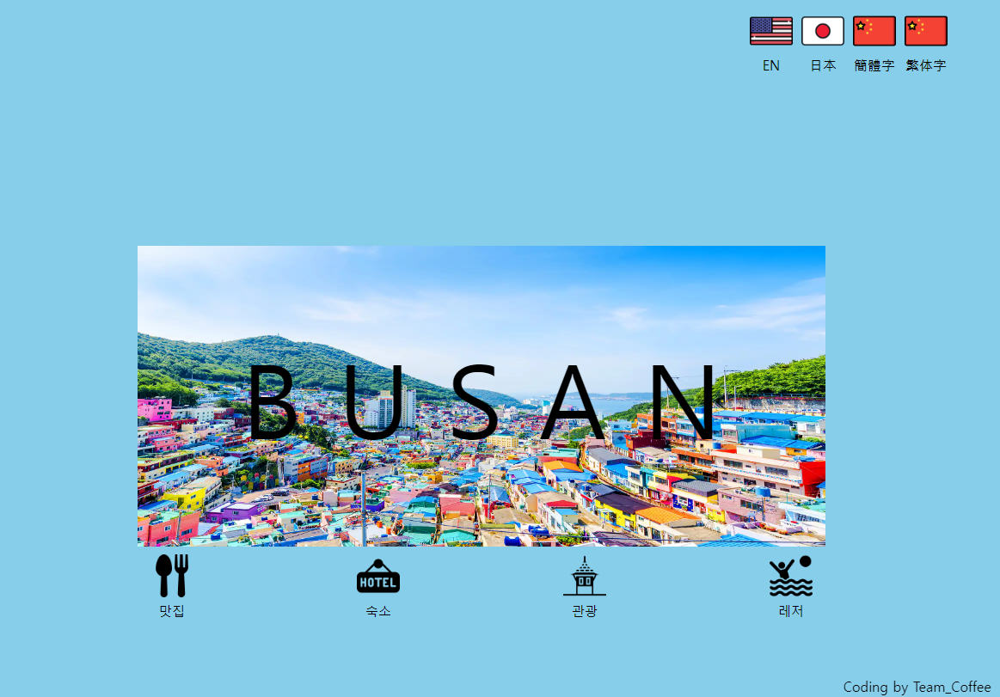
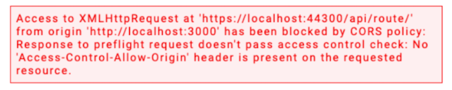
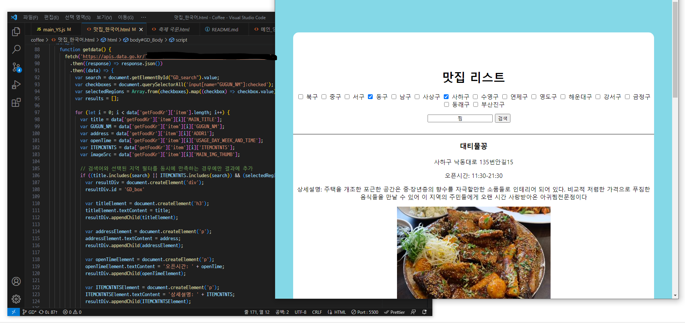

Coffee_PROJECT
Tech Stack : HTML5 CSS3 JavaScript API JSON Git-Github Node.js

부산 관광데이터 공모전 출품을 위해 오픈API를 이용한 관광지 정보를 한국어, 중국어, 영어로 제공하는 웹 사이트를 제작했습니다.
우리 팀은 API를 처음 경험해보는 인원들이 뭉쳐 한번 해보자 못할것도 없지 라는 생각으로 프로젝트를 진행하게 되었고 처음 CORS오류를 경험하게 되었습니다.
우리는 이게 고통의 시작이 될줄 생각도 못했고 1주일이라는 개발 기간중 3일을 해당 오류를 해결하기 위해 사용하게 되었습니다

해당 오류를 해결 하기위해 각자 node.js, git.io, python, 도메인구입방법 네가지 방법으로 해결해보기로 하고 3일동안 서로 오류 해결을 하고자 노력한 결과 node.js또는 fetch함수로 해결할수 있다는걸 알게 되었습니다.
하지만 개발 기간이 얼마 남지 않았고 카카오 오픈API와 관광데이터포털의 오픈API를 사용하려고 하다 보니 CORS에러가 생겼기 때문에 우리 팀은 카카오API를 사용하지 않기로 하고 부산 관광데이터포털의 오픈API만을 가지고 개발하게 되었습니다.

체크박스와 키워드 검색을 이용한 필터 기능을 사용해 방대한 자료중 사용자가 검색한 키워드를 포함된 정보만 추출해 사용자에게 해당 정보를 제공하는 것 까지 구현했습니다.